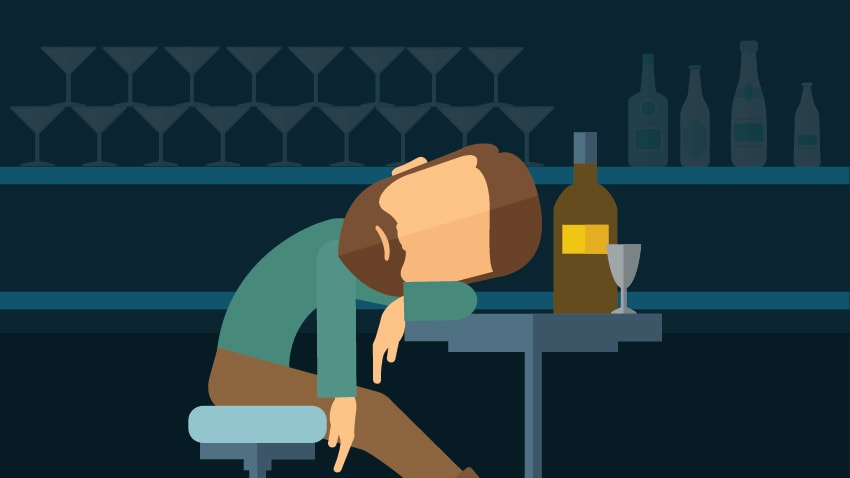

Problem
Alcohol is a social problem, from time immemorial, alcohol has been evil for humans. Because of alcohol people can have accidents, go to jail, kill someone or die. Alcohol negatively affects not only physically but also mentally and alcohol in large doses acts as a depressant for a person. Yes, alcohol helps to relax and forget problems, but many people abuse alcohol and become addicted to it. And when people become addicted even if he knows that it is unhealthy but he continues drinking. The worst is that those addicted to alcohol can’t control the volume of alcohol that they drink and when people drink a lot alcohol disrupts their organs. Alcohol can break human life.
